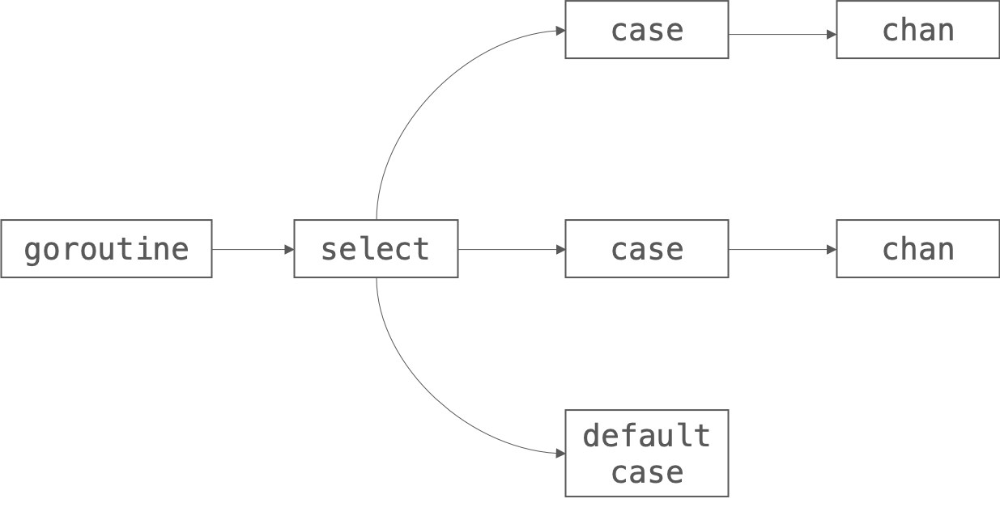
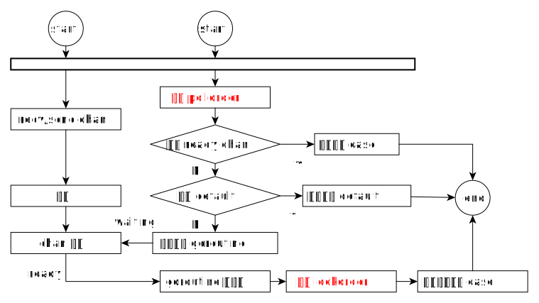

本篇主要介绍
select的内部实现原理(基于go1.12), 通过源码和图形的方式展示select的内部结构及对select进行操作的过程。
基本语法
Go官方给出的例子很简单:1
2
3
4
5
6
7
8
9
10
11
12
13
14
15
16
17
18
19
20
21
22
23
24
25
26
27
28package main
import "fmt"
func fibonacci(c, quit chan int) {
x, y := 0, 1
for {
select {
case c <- x:
x, y = y, x+y
case <-quit:
fmt.Println("quit")
return
}
}
}
func main() {
c := make(chan int)
quit := make(chan int)
go func() {
for i := 0; i < 10; i++ {
fmt.Println(<-c)
}
quit <- 0
}()
fibonacci(c, quit)
}
可以看出Select和Switch使用方法有点相似，不一样的地方在于:Select的case条件必须是与chan相关的操作（从chan发送或者接收数据）
编译
关于select的编译过程可以从$GOROOT/src/cmd/compile/internal/gc/select.go中找到。
工具使用
为了研究代码的运行逻辑，我们可以借助针对Go开发的debug工具:dlv, 我们通过:1
go build -gcflags="all=-N -l" $GOROOT/src/cmd/compile
这样我们就可以使用对compile工具进行debug了, 通过下面的方式运行:1
dlv exec compile $GOROOT/src/cmd/compile/internal/gc/select.go
然后分别给我们想要debug的地方打断点
编译过程
我们对typecheckselect和walkselect函数打断点，可以知道运行顺序是typecheckselect -> walkselect。
首先我们先来看typecheckselect函数:1
2
3
4
5
6
7
8
9
10
11
12
13
14
15
16
17
18
19
20
21
22
23
24
25
26
27
28
29
30
31
32
33
34
35
36
37
38
39
40
41
42
43
44
45
46
47
48
49
50
51
52
53
54
55
56
57
58
59
60
61
62
63
64
65
66
67
68
69
70
71
72
73
74
75
76
77
78
79
80
81
82
83
84
85
86
87
88// select
func typecheckselect(sel *Node) {
var def *Node
lno := setlineno(sel)
typecheckslice(sel.Ninit.Slice(), ctxStmt)
// 遍历检查所有的case
for _, ncase := range sel.List.Slice() {
// 处理之前对每个case先进行检查是否是空的
if ncase.Op != OXCASE {
setlineno(ncase)
Fatalf("typecheckselect %v", ncase.Op)
}
// case 后面是空条件，这种情况说明是default
if ncase.List.Len() == 0 {
// default
if def != nil {
yyerrorl(ncase.Pos, "multiple defaults in select (first at %v)", def.Line())
} else {
def = ncase
}
} else if ncase.List.Len() > 1 { // case的值不支持多个表达式
yyerrorl(ncase.Pos, "select cases cannot be lists")
} else { // case 只有一个表达式
ncase.List.SetFirst(typecheck(ncase.List.First(), ctxStmt))
n := ncase.List.First() // 把case的第一个表达式赋值给 n
ncase.Left = n
ncase.List.Set(nil)
switch n.Op { // 对 case 的具体操作进行检查
default: // 对于未知类型的case 进行下面的处理
pos := n.Pos
if n.Op == ONAME {
// We don't have the right position for ONAME nodes (see #15459 and
// others). Using ncase.Pos for now as it will provide the correct
// line number (assuming the expression follows the "case" keyword
// on the same line). This matches the approach before 1.10.
pos = ncase.Pos
}
// 打印错误，只接受下面的几个类型
yyerrorl(pos, "select case must be receive, send or assign recv")
// convert x = <-c into OSELRECV(x, <-c).
// remove implicit conversions; the eventual assignment
// will reintroduce them.
// 处理 case 为 x = <-c 的表达式
case OAS:
if (n.Right.Op == OCONVNOP || n.Right.Op == OCONVIFACE) && n.Right.Implicit() {
n.Right = n.Right.Left
}
if n.Right.Op != ORECV {
yyerrorl(n.Pos, "select assignment must have receive on right hand side")
break
}
n.Op = OSELRECV
// convert x, ok = <-c into OSELRECV2(x, <-c) with ntest=ok
// 处理 case 为 x, ok = <-c 的表达式
case OAS2RECV:
if n.Rlist.First().Op != ORECV {
yyerrorl(n.Pos, "select assignment must have receive on right hand side")
break
}
n.Op = OSELRECV2
n.Left = n.List.First()
n.List.Set1(n.List.Second())
n.Right = n.Rlist.First()
n.Rlist.Set(nil)
// convert <-c into OSELRECV(N, <-c)
// 处理 case 为 <-c 的表达式
case ORECV:
n = nodl(n.Pos, OSELRECV, nil, n)
n.SetTypecheck(1)
ncase.Left = n
case OSEND: // 无需要做特殊处理
break
}
}
typecheckslice(ncase.Nbody.Slice(), ctxStmt)
}
lineno = lno
}
然后再来看walkselect函数, 这个函数主要是对每个case进行处理，真正处理每个case的函数是walkselectcases:1
2
3
4
5
6
7
8
9
10
11
12
13
14
15
16
17
18
19
20
21
22
23
24
25
26
27
28
29
30
31
32
33
34
35
36
37
38
39
40
41
42
43
44
45
46
47
48
49
50
51
52
53
54
55
56
57
58
59
60
61
62
63
64
65
66
67
68
69
70
71
72
73
74
75
76
77
78
79
80
81
82
83
84
85
86
87
88
89
90
91
92
93
94
95
96
97
98
99
100
101
102
103
104
105
106
107
108
109
110
111
112
113
114
115
116
117
118
119
120
121
122
123
124
125
126
127
128
129
130
131
132
133
134
135
136
137
138
139
140
141
142
143
144
145
146
147
148
149
150
151
152
153
154
155
156
157
158
159
160
161
162
163
164
165
166
167
168
169
170
171
172
173
174
175
176
177
178
179
180
181
182
183
184
185
186
187
188
189
190
191
192
193
194
195
196
197
198
199
200
201
202
203
204
205
206
207
208
209
210
211
212
213
214
215
216
217
218
219
220
221
222
223
224
225
226
227
228
229
230
231
232
233
234
235
236
237
238
239
240
241func walkselectcases(cases *Nodes) []*Node {
n := cases.Len()
sellineno := lineno
// optimization: zero-case select
if n == 0 {
return []*Node{mkcall("block", nil, nil)}
}
// optimization: one-case select: single op.
// TODO(rsc): Reenable optimization once order.go can handle it.
// golang.org/issue/7672.
// 处理只有一个 case 的情况
// 处理结果是优化成: if xx {}
if n == 1 {
cas := cases.First()
setlineno(cas)
l := cas.Ninit.Slice()
if cas.Left != nil { // not default:
n := cas.Left
l = append(l, n.Ninit.Slice()...)
n.Ninit.Set(nil)
var ch *Node
switch n.Op { // 根据操作符对齐进行词法分析，重新构造AST
default:
Fatalf("select %v", n.Op)
// ok already
case OSEND:
ch = n.Left
case OSELRECV, OSELRECV2:
ch = n.Right.Left
if n.Op == OSELRECV || n.List.Len() == 0 {
if n.Left == nil {
n = n.Right
} else {
n.Op = OAS // 转化为 Left = Right 表达式
}
break
}
if n.Left == nil {
nblank = typecheck(nblank, ctxExpr|ctxAssign)
n.Left = nblank
}
n.Op = OAS2 // 转化为多赋值表达式: List = Rlist (x, y, z = a, b, c)
n.List.Prepend(n.Left)
n.Rlist.Set1(n.Right)
n.Right = nil
n.Left = nil
n.SetTypecheck(0)
n = typecheck(n, ctxStmt)
}
// if ch == nil { block() }; n; // 转换为 if ch == nil { block() } 表达式
a := nod(OIF, nil, nil) // 转化为: if Ninit; Left { Nbody } else { Rlist }
a.Left = nod(OEQ, ch, nodnil()) // a.Left 转化为: Left == Right, 既: ch == nil
var ln Nodes
ln.Set(l)
a.Nbody.Set1(mkcall("block", nil, &ln)) // Body 变为 block 调用
l = ln.Slice()
a = typecheck(a, ctxStmt)
l = append(l, a, n)
}
l = append(l, cas.Nbody.Slice()...)
l = append(l, nod(OBREAK, nil, nil))
return l
}
// convert case value arguments to addresses.
// this rewrite is used by both the general code and the next optimization.
// 存在多个 case, 分别处理
for _, cas := range cases.Slice() {
setlineno(cas)
n := cas.Left
if n == nil {
continue
}
switch n.Op {
case OSEND:
...
case OSELRECV, OSELRECV2:
...
}
}
// optimization: two-case select but one is default: single non-blocking op.
// 处理只有两个 case, 并且其中一个是 default 的情况
if n == 2 && (cases.First().Left == nil || cases.Second().Left == nil) {
var cas *Node // 非 default case
var dflt *Node // default case
if cases.First().Left == nil {
cas = cases.Second()
dflt = cases.First()
} else {
dflt = cases.Second()
cas = cases.First()
}
n := cas.Left
setlineno(n)
r := nod(OIF, nil, nil)
r.Ninit.Set(cas.Ninit.Slice())
switch n.Op {
default:
Fatalf("select %v", n.Op)
case OSEND:
// if selectnbsend(c, v) { body } else { default body }
ch := n.Left
r.Left = mkcall1(chanfn("selectnbsend", 2, ch.Type), types.Types[TBOOL], &r.Ninit, ch, n.Right)
case OSELRECV:
// if selectnbrecv(&v, c) { body } else { default body }
...
r.Left = mkcall1(chanfn("selectnbrecv", 2, ch.Type), types.Types[TBOOL], &r.Ninit, elem, ch)
case OSELRECV2:
// if selectnbrecv2(&v, &received, c) { body } else { default body }
...
r.Left = mkcall1(chanfn("selectnbrecv2", 2, ch.Type), types.Types[TBOOL], &r.Ninit, elem, receivedp, ch)
}
r.Left = typecheck(r.Left, ctxExpr)
r.Nbody.Set(cas.Nbody.Slice())
r.Rlist.Set(append(dflt.Ninit.Slice(), dflt.Nbody.Slice()...))
return []*Node{r, nod(OBREAK, nil, nil)}
}
var init []*Node
// generate sel-struct
lineno = sellineno
selv := temp(types.NewArray(scasetype(), int64(n)))
r := nod(OAS, selv, nil)
r = typecheck(r, ctxStmt)
init = append(init, r)
order := temp(types.NewArray(types.Types[TUINT16], 2*int64(n)))
r = nod(OAS, order, nil)
r = typecheck(r, ctxStmt)
init = append(init, r)
// register cases
for i, cas := range cases.Slice() { // 其它 case 的情况处理
setlineno(cas)
init = append(init, cas.Ninit.Slice()...)
cas.Ninit.Set(nil)
// Keep in sync with runtime/select.go.
const (
caseNil = iota
caseRecv
caseSend
caseDefault
)
var c, elem *Node
var kind int64 = caseDefault
if n := cas.Left; n != nil {
init = append(init, n.Ninit.Slice()...)
switch n.Op {
default:
Fatalf("select %v", n.Op)
case OSEND:
kind = caseSend
c = n.Left
elem = n.Right
case OSELRECV, OSELRECV2:
kind = caseRecv
c = n.Right.Left
elem = n.Left
}
}
setField := func(f string, val *Node) {
r := nod(OAS, nodSym(ODOT, nod(OINDEX, selv, nodintconst(int64(i))), lookup(f)), val)
r = typecheck(r, ctxStmt)
init = append(init, r)
}
setField("kind", nodintconst(kind))
if c != nil {
c = convnop(c, types.Types[TUNSAFEPTR])
setField("c", c)
}
if elem != nil {
elem = convnop(elem, types.Types[TUNSAFEPTR])
setField("elem", elem)
}
// TODO(mdempsky): There should be a cleaner way to
// handle this.
if instrumenting {
r = mkcall("selectsetpc", nil, nil, bytePtrToIndex(selv, int64(i)))
init = append(init, r)
}
}
// run the select
lineno = sellineno
chosen := temp(types.Types[TINT])
recvOK := temp(types.Types[TBOOL])
r = nod(OAS2, nil, nil)
r.List.Set2(chosen, recvOK)
fn := syslook("selectgo")
r.Rlist.Set1(mkcall1(fn, fn.Type.Results(), nil, bytePtrToIndex(selv, 0), bytePtrToIndex(order, 0), nodintconst(int64(n))))
r = typecheck(r, ctxStmt)
init = append(init, r)
// selv and order are no longer alive after selectgo.
init = append(init, nod(OVARKILL, selv, nil))
init = append(init, nod(OVARKILL, order, nil))
// dispatch cases
for i, cas := range cases.Slice() {
setlineno(cas)
cond := nod(OEQ, chosen, nodintconst(int64(i)))
cond = typecheck(cond, ctxExpr)
cond = defaultlit(cond, nil)
r = nod(OIF, cond, nil)
if n := cas.Left; n != nil && n.Op == OSELRECV2 {
x := nod(OAS, n.List.First(), recvOK)
x = typecheck(x, ctxStmt)
r.Nbody.Append(x)
}
r.Nbody.AppendNodes(&cas.Nbody)
r.Nbody.Append(nod(OBREAK, nil, nil))
init = append(init, r)
}
return init
}
针对select不同case的情况编译的方式不用:
没有case
看一下相关代码:1
2
3if n == 0 {
return []*Node{mkcall("block", nil, nil)}
}
直接调用block
由于没又对应的chan处理，所以当前goroutine进入休眠状态，无法被唤醒
只有1个case
对应源码:1
2
3
4
5
6
7
8
9
10
11
12
13
14
15
16
17
18
19
20
21
22
23
24
25
26
27
28
29
30
31
32
33
34if n == 1 {
cas := cases.First()
setlineno(cas)
l := cas.Ninit.Slice()
if cas.Left != nil { // not default:
...
switch n.Op {
default:
Fatalf("select %v", n.Op)
// ok already
case OSEND:
ch = n.Left
case OSELRECV, OSELRECV2:
...
}
// if ch == nil { block() }; n;
a := nod(OIF, nil, nil)
a.Left = nod(OEQ, ch, nodnil())
var ln Nodes
ln.Set(l)
a.Nbody.Set1(mkcall("block", nil, &ln))
l = ln.Slice()
a = typecheck(a, ctxStmt)
l = append(l, a, n)
}
l = append(l, cas.Nbody.Slice()...) // 指的是下面的具体case处理内容
l = append(l, nod(OBREAK, nil, nil))
return l
}
这里其实也分为两种方式，
一种是这个case是default
直接把 case 对应的 body 放入 AST 中1
2
3
4select {
default:
println("default")
}
转换为:1
println("default")
另一种是这个case不是default:
转换一下 case 表达式1
2
3
4select {
case v, ok <-ch:
// ...
}
转换为:1
2
3
4
5if ch == nil {
block()
}
v, ok := <-ch
// ...
有2个case, 其中一个是default
对于有两个, 但是其中一个为default的，具体处理代码如下:1
2
3
4
5
6
7
8
9
10
11
12
13
14
15
16
17
18
19
20
21
22
23
24
25
26
27
28
29
30
31
32
33
34
35
36// optimization: two-case select but one is default: single non-blocking op.
if n == 2 && (cases.First().Left == nil || cases.Second().Left == nil) {
var cas *Node
var dflt *Node
if cases.First().Left == nil {
cas = cases.Second()
dflt = cases.First()
} else {
dflt = cases.Second()
cas = cases.First()
}
n := cas.Left
setlineno(n)
r := nod(OIF, nil, nil)
r.Ninit.Set(cas.Ninit.Slice())
switch n.Op {
default:
Fatalf("select %v", n.Op)
case OSEND:
// if selectnbsend(c, v) { body } else { default body }
ch := n.Left
r.Left = mkcall1(chanfn("selectnbsend", 2, ch.Type), types.Types[TBOOL], &r.Ninit, ch, n.Right)
case OSELRECV:
// if selectnbrecv(&v, c) { body } else { default body }
...
r.Left = mkcall1(chanfn("selectnbrecv", 2, ch.Type), types.Types[TBOOL], &r.Ninit, elem, ch)
case OSELRECV2:
// if selectnbrecv2(&v, &received, c) { body } else { default body }
...
r.Rlist.Set(append(dflt.Ninit.Slice(), dflt.Nbody.Slice()...))
return []*Node{r, nod(OBREAK, nil, nil)}
}
可以看到真对每个case的具体操作可以转为不同的形式，具体的可以参考针对每个 case 所调用的函数:1
2
3
4
5
6
7
8
9
10
11
12
13
14
15
16
17
18
19
20// compiler implements
//
// select {
// case c <- v:
// ... foo
// default:
// ... bar
// }
//
// as
//
// if selectnbsend(c, v) {
// ... foo
// } else {
// ... bar
// }
//
func selectnbsend(c *hchan, elem unsafe.Pointer) (selected bool) {
return chansend(c, elem, false, getcallerpc())
}
1 | // compiler implements |
1 | // compiler implements |
2个以上case, 或两个case并且没有default
对于这种情况，主要是调用了 selectgo来处理1
2fn := syslook("selectgo")
r.Rlist.Set1(mkcall1(fn, fn.Type.Results(), nil, bytePtrToIndex(selv, 0), bytePtrToIndex(order, 0), nodintconst(int64(n))))
用图形来表示这时的select结构如下:

详细内容参考下面的 selectgo的分析
select 源码分析
前面主要是介绍select的基本语法和词法分析过程，下面针对select的运行时代码进行分析
源码
在分析源码之前，先写一个demo, 然后通过编译成汇编，看看内部是如何调用的, 还是使用官方给出的demo, 对其进行编译:1
go tool compile -S select.go
输出汇编代码:1
2
3
4
5
6"".fibonacci STEXT size=354 args=0x10 locals=0xc8
0x0000 00000 (select2.go:5) TEXT "".fibonacci(SB), ABIInternal, $200-16
...
0x00d4 00212 (select2.go:8) CALL runtime.selectgo(SB)
...
0x00d4 00212 (select2.go:8) CALL runtime.selectgo(SB)
可以看出调用了runtime.selectgo函数，这个函数的实现在runtime/select.go:155:1
2
3
4
5
6
7
8
9
10
11
12
13
14
15
16
17
18
19
20
21
22
23
24
25
26
27
28
29
30
31
32
33
34
35
36
37
38
39
40
41
42
43
44
45
46
47
48
49
50
51
52
53
54
55
56
57
58
59
60
61
62
63
64
65
66
67
68
69
70
71
72
73
74
75
76
77
78
79
80
81
82
83
84
85
86
87
88
89
90
91
92
93
94
95
96
97
98
99
100
101
102
103
104
105
106
107
108
109
110
111
112
113
114
115
116
117
118
119
120
121
122
123
124
125
126
127
128
129
130
131
132
133
134
135
136
137
138
139
140
141
142
143
144
145
146
147
148
149
150
151
152
153
154
155
156
157
158
159
160
161
162
163
164
165
166
167
168
169
170
171
172
173
174
175
176
177
178
179
180
181
182
183
184
185
186
187
188
189
190
191
192
193
194
195
196
197
198
199
200
201
202
203
204
205
206
207
208
209
210
211
212
213
214
215
216
217
218
219
220
221
222
223
224
225
226
227
228
229
230
231
232
233
234
235
236
237
238
239
240
241
242
243
244
245
246
247
248
249
250
251
252
253
254
255
256
257
258
259
260
261
262
263
264
265
266
267
268
269
270
271
272
273
274
275
276
277
278
279
280
281
282
283
284
285
286
287
288
289
290
291
292
293
294
295
296
297
298
299
300
301
302
303
304
305
306
307
308
309
310
311
312
313
314
315
316
317
318
319
320
321
322
323
324
325
326
327
328
329
330
331
332
333
334
335
336
337
338
339
340
341
342
343
344
345
346
347
348
349
350
351
352
353
354
355
356
357
358
359
360
361
362
363// selectgo implements the select statement.
//
// cas0 points to an array of type [ncases]scase, and order0 points to
// an array of type [2*ncases]uint16. Both reside on the goroutine's
// stack (regardless of any escaping in selectgo).
//
// selectgo returns the index of the chosen scase, which matches the
// ordinal position of its respective select{recv,send,default} call.
// Also, if the chosen scase was a receive operation, it reports whether
// a value was received.
// cas0 是指向类型为 [ncases]scase 的数组, 其实就是我们 select 写的 case 组成的数组
// order0 指向的是一个类型为 [2*ncases]uint16 的数组
// cas0 和 order0 都存在于 goroutine 的栈中(不考虑逃逸分析)
// selectgo 返回的是要执行的 case 的索引(index)
// 如果 case 是 recv 操作, 还没返回是否接收到了数据(第二个 bool 参数)
// ncases 表示的是 case 的个数
func selectgo(cas0 *scase, order0 *uint16, ncases int) (int, bool) {
...
cas1 := (*[1 << 16]scase)(unsafe.Pointer(cas0)) // 创建一个长度为[1<<16]的数组，并把cas0的地址赋值给cas1, 现在cas1表示了所有的case
order1 := (*[1 << 17]uint16)(unsafe.Pointer(order0)) // 创建一个长度为[1<<17]的数组，指向order0
scases := cas1[:ncases:ncases] // scases 包含了所有的case, 并且cap为case的个数
pollorder := order1[:ncases:ncases] // 长度为case个数的数组，其实里面的内容是要放case的执行顺序
lockorder := order1[ncases:][:ncases:ncases] // 指向order1的后面的存储空间, 内容是要存放根据chan的地址顺序排序的所有chan
// Replace send/receive cases involving nil channels with
// caseNil so logic below can assume non-nil channel.
// 先对所有case进行处理，忽略case.c = nil, 也就是对应的chan已经被关闭或者其他情况导致的nil
for i := range scases {
cas := &scases[i]
if cas.c == nil && cas.kind != caseDefault {
*cas = scase{}
}
}
...
// The compiler rewrites selects that statically have
// only 0 or 1 cases plus default into simpler constructs.
// The only way we can end up with such small sel.ncase
// values here is for a larger select in which most channels
// have been nilled out. The general code handles those
// cases correctly, and they are rare enough not to bother
// optimizing (and needing to test).
// 编译器已经把对于只有0或者1个case+default的形式给优化成了简单的结构
// 这个我们处理的是更多的select case的情况
// generate permuted order
// 对 case 进行随机排序
for i := 1; i < ncases; i++ {
j := fastrandn(uint32(i + 1)) // 快速求随机数, 范围: [0, i]
pollorder[i] = pollorder[j] // 第 i 个数据的值 = 第 j 个数据的值
pollorder[j] = uint16(i) // 第 j 个数的值赋值为 i
}
// sort the cases by Hchan address to get the locking order.
// simple heap sort, to guarantee n log n time and constant stack footprint.
// 对所有case 中的 hchan 按照地址进行堆排序
// 排完序后是为了对齐进行加锁，防止重复加锁
// 根据 hchan 地址构建大顶堆
for i := 0; i < ncases; i++ {
j := i
// Start with the pollorder to permute cases on the same channel.
c := scases[pollorder[i]].c
for j > 0 && scases[lockorder[(j-1)/2]].c.sortkey() < c.sortkey() {
k := (j - 1) / 2
lockorder[j] = lockorder[k]
j = k
}
lockorder[j] = pollorder[i]
}
// 进行堆排序
for i := ncases - 1; i >= 0; i-- {
o := lockorder[i]
c := scases[o].c
lockorder[i] = lockorder[0]
j := 0
for {
k := j*2 + 1
if k >= i {
break
}
if k+1 < i && scases[lockorder[k]].c.sortkey() < scases[lockorder[k+1]].c.sortkey() {
k++
}
if c.sortkey() < scases[lockorder[k]].c.sortkey() {
lockorder[j] = lockorder[k]
j = k
continue
}
break
}
lockorder[j] = o
}
...
// lock all the channels involved in the select
// 根据lockorder对scases的chan上锁，具体实现参考下面对sellock函数的介绍
sellock(scases, lockorder)
var (
gp *g
sg *sudog
c *hchan
k *scase
sglist *sudog
sgnext *sudog
qp unsafe.Pointer
nextp **sudog
)
loop:
// pass 1 - look for something already waiting
// 第一种情况，已经有满足的 case 条件
var dfli int
var dfl *scase
var casi int
var cas *scase
var recvOK bool
for i := 0; i < ncases; i++ { // 根据之前的随机顺序访问
casi = int(pollorder[i])
cas = &scases[casi]
c = cas.c
switch cas.kind {
case caseNil: // 如果当前 case 是一个 nil 的 chan, 则不处理，继续寻找其他的 case
continue
case caseRecv: // 如果是接收数据的 case
sg = c.sendq.dequeue()
if sg != nil { // sg != nil 这证明 buf已经满了，或者是一个不带buf的chan, 然后执行 recv函数，recv的过程可以参考 go channel 原理的介绍
goto recv
}
if c.qcount > 0 { // 如果 qcount > 0 这证明 buf 里是有数据的，所有从 buf 里取数据
goto bufrecv
}
if c.closed != 0 { // 对应的chan已经被关闭了
goto rclose
}
case caseSend: // 如果是发送数据
if raceenabled {
racereadpc(c.raceaddr(), cas.pc, chansendpc)
}
if c.closed != 0 { // 如果被关闭了，进入sclose， 最终会 panic
goto sclose
}
sg = c.recvq.dequeue()
if sg != nil { // recv队列不为空，则执行 send 函数, 参考 go channel 中 send 的处理
goto send
}
if c.qcount < c.dataqsiz { // 证明 buf 还没满，直接发送到 buf 中
goto bufsend
}
case caseDefault: // case 是 default case，这里其实时延迟赋值，如果运行了其他case, 就没必要赋值了
dfli = casi // default 的下标
dfl = cas // 给 default 赋值
// 继续寻找其他case
}
}
// 走到这里证明没有准备好的chan case能够执行，下面会优先执行 default
if dfl != nil { // default 不为空
selunlock(scases, lockorder) // 对已经上锁的进行解锁
casi = dfli
cas = dfl
goto retc // 直接返回 default 的 index
}
// pass 2 - enqueue on all chans
// 走到这里所有的case都无法运行
// 把所有的chan都进入阻塞状态
// 具体细节可以参考 go channel 的操作
gp = getg()
if gp.waiting != nil {
throw("gp.waiting != nil")
}
nextp = &gp.waiting
for _, casei := range lockorder {
casi = int(casei)
cas = &scases[casi]
if cas.kind == caseNil {
continue
}
c = cas.c
sg := acquireSudog()
sg.g = gp
sg.isSelect = true
// No stack splits between assigning elem and enqueuing
// sg on gp.waiting where copystack can find it.
sg.elem = cas.elem
sg.releasetime = 0
if t0 != 0 {
sg.releasetime = -1
}
sg.c = c
// Construct waiting list in lock order.
*nextp = sg
nextp = &sg.waitlink
switch cas.kind {
case caseRecv:
c.recvq.enqueue(sg)
case caseSend:
c.sendq.enqueue(sg)
}
}
// wait for someone to wake us up
// 这里当前goroutine会进入阻塞，让出CPU, 等待chan可以发送或者接收数据时就被唤醒，这个可以参考chan的实现:
// 当前goroutine进入recvq或sendq， 当任何一个chan被其他goroutine操作时，就会把当前goroutine唤醒
gp.param = nil
gopark(selparkcommit, nil, waitReasonSelect, traceEvGoBlockSelect, 1) //阻塞，直到被唤醒
sellock(scases, lockorder)
gp.selectDone = 0
sg = (*sudog)(gp.param)
gp.param = nil
// pass 3 - dequeue from unsuccessful chans
// otherwise they stack up on quiet channels
// record the successful case, if any.
// We singly-linked up the SudoGs in lock order.
casi = -1
cas = nil
sglist = gp.waiting
// Clear all elem before unlinking from gp.waiting.
for sg1 := gp.waiting; sg1 != nil; sg1 = sg1.waitlink {
sg1.isSelect = false
sg1.elem = nil
sg1.c = nil
}
gp.waiting = nil
for _, casei := range lockorder {
k = &scases[casei]
if k.kind == caseNil {
continue
}
if sglist.releasetime > 0 {
k.releasetime = sglist.releasetime
}
if sg == sglist {
// sg has already been dequeued by the G that woke us up.
casi = int(casei)
cas = k // 寻找当前被唤醒的case
} else {
c = k.c
if k.kind == caseSend {
c.sendq.dequeueSudoG(sglist) // 出队, 但是不处理对应的 chan 值
} else {
c.recvq.dequeueSudoG(sglist) // 出队, 但是不处理对应的 chan 值
}
}
sgnext = sglist.waitlink
sglist.waitlink = nil
releaseSudog(sglist) // 释放当前 sglist
sglist = sgnext // 继续处理下一个 sglist
}
// 如果没有被唤醒的case(在一些情况下, 如: close chan等)
if cas == nil {
// We can wake up with gp.param == nil (so cas == nil)
// when a channel involved in the select has been closed.
// It is easiest to loop and re-run the operation;
// we'll see that it's now closed.
// Maybe some day we can signal the close explicitly,
// but we'd have to distinguish close-on-reader from close-on-writer.
// It's easiest not to duplicate the code and just recheck above.
// We know that something closed, and things never un-close,
// so we won't block again.
goto loop
}
c = cas.c
...
if cas.kind == caseRecv {
recvOK = true
}
...
selunlock(scases, lockorder)
goto retc
bufrecv:
// can receive from buffer
// 处理从 buf recv 的情况
...
recvOK = true
qp = chanbuf(c, c.recvx)
if cas.elem != nil {
typedmemmove(c.elemtype, cas.elem, qp)
}
typedmemclr(c.elemtype, qp)
c.recvx++
if c.recvx == c.dataqsiz {
c.recvx = 0
}
c.qcount--
selunlock(scases, lockorder)
goto retc
bufsend:
// can send to buffer
// 处理从 buf send 的情况
...
typedmemmove(c.elemtype, chanbuf(c, c.sendx), cas.elem)
c.sendx++
if c.sendx == c.dataqsiz {
c.sendx = 0
}
c.qcount++
selunlock(scases, lockorder)
goto retc
recv:
// can receive from sleeping sender (sg)
// 直接从 goroutine 中 recv
recv(c, sg, cas.elem, func() { selunlock(scases, lockorder) }, 2)
if debugSelect {
print("syncrecv: cas0=", cas0, " c=", c, "\n")
}
recvOK = true
goto retc
rclose:
// read at end of closed channel
// recv close chan 的情况
selunlock(scases, lockorder)
recvOK = false
if cas.elem != nil {
typedmemclr(c.elemtype, cas.elem)
}
if raceenabled {
raceacquire(c.raceaddr())
}
goto retc
send:
// can send to a sleeping receiver (sg)
// 直接从 goroutine 中 send
...
send(c, sg, cas.elem, func() { selunlock(scases, lockorder) }, 2)
if debugSelect {
print("syncsend: cas0=", cas0, " c=", c, "\n")
}
goto retc
retc:
// 返回 index 和 recv 状态
if cas.releasetime > 0 {
blockevent(cas.releasetime-t0, 1)
}
return casi, recvOK
sclose:
// send on closed channel
// send close chan 的情况
selunlock(scases, lockorder)
panic(plainError("send on closed channel"))
}
以上是整个select的选择过程。
其中 每个case scase 的数据结构如下:1
2
3
4
5
6
7
8
9
10// Select case descriptor.
// Known to compiler.
// Changes here must also be made in src/cmd/internal/gc/select.go's scasetype.
type scase struct {
c *hchan // case 语句中使用到的 chan
elem unsafe.Pointer // data element
kind uint16 // case的类型，包括send, recv, default等
pc uintptr // race pc (for race detector / msan)
releasetime int64
}
对每个case的chan上锁的过程如下:1
2
3
4
5
6
7
8
9
10
11// 对 select 的 case.c 上锁，根据 lockorder 的顺序
func sellock(scases []scase, lockorder []uint16) {
var c *hchan
for _, o := range lockorder {
c0 := scases[o].c
if c0 != nil && c0 != c { // 这个判断如果不满足证明当前chan和前一个chan地址是一样的，只上一次锁就行了
c = c0
lock(&c.lock)
}
}
}
上面的过程也可以用一个流程图来表示:
